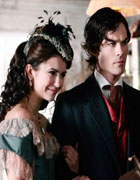

EPISÓDIO 13 – CHILDREN OF THE DAMN

MAIS SEGREDOS DA HISTÓRIA DOS SALVATORE SÃO REVELADOS:
Em flashbacks, Stefan (Paul Wesley) e Damon (Ian Somerhalder) irão recordar ao
longo do tempo as ações que foram tomadas pelas pessoas da cidade que incluem a
seu pai, Giuseppe Salvatore (ator convidado James Remar, “Dexter”) e Pearl (atriz
convidada Kelly Hu, “Army Wives”), levando aos eventos devastadores que causaram a
quebra em seu relacionamento. No presente, o encontro entre Bonnie (Katerina Graham)
e Ben (ator convidado Sean Faris) toma a um rumo assustador. Elena ajuda Stefan e
Damon na corrida para encontrar um antigo jornal em falta que pertenceu a
um dos seus antepassados. Enquanto isso Stefan descobre a verdadeira
razão do interesse de Alaric (Matt Davis) tanto com o jornal, como a história
da cidade. Damon descobre que um velho conhecido retornou á cidade com
um plano que ele compreende. Steven R. McQueen e Sara Canning também estrelam.
Ir para GUIA PRIMEIRA TEMPORADA